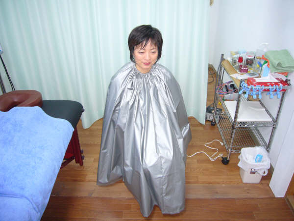

オイルマッサージ よもぎにはシネオール他の精油成分が含まれ、 温熱効果があり湯冷めをしにくいのです。 「よもぎ蒸し」をした後、不思議とほかほか感が持続するのは、 この成分が働きかけている ことも大きいのです。 また殺菌・消炎作用がある事から肌に大変良く、しっしん、吹き出物、 かさつきを抑えます。お灸のもぐさは、よもぎが利用されていますのが、 これは腰痛・神経痛に効果的に働きかけると言われているからなのです。 漢方として名高いよもぎ。 私達の体には色々な良い作用を示してくれるのです。 30代～60代後半の女性から大きな反響を頂いております。

２，０００円＋税（鍼・灸・指圧・オイルマッサージと併用の時は半額）